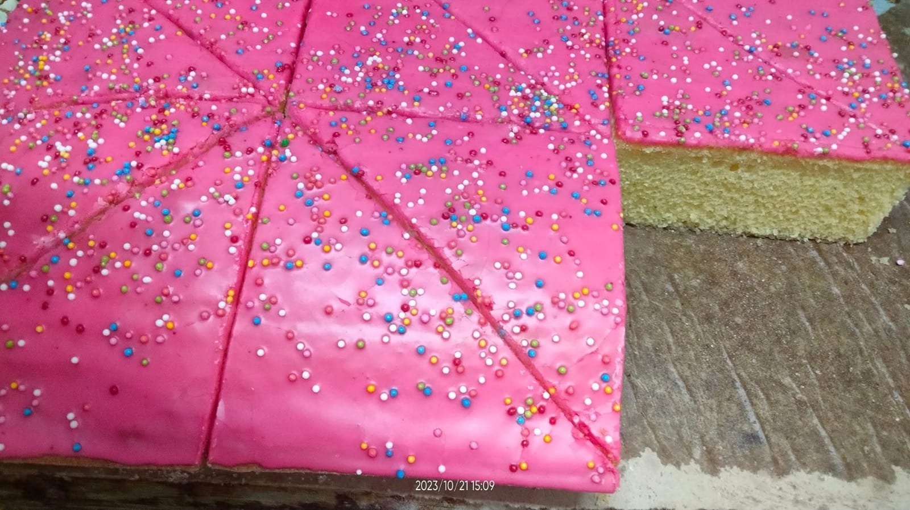

Esperamos acompañe con un buen vaso de leche al concluir su pan, las conclusiones generales terminaron en que fue un reto, pues hubieron códigos rotos y la parte del lanzamiento nos costó bastante tiempo, al final valió la pena y dimos un gran trabajo
1. Página Principal
2. Introducción
3. Objetivo
4. Desarrollo
5. Bibliografía
6. Productos